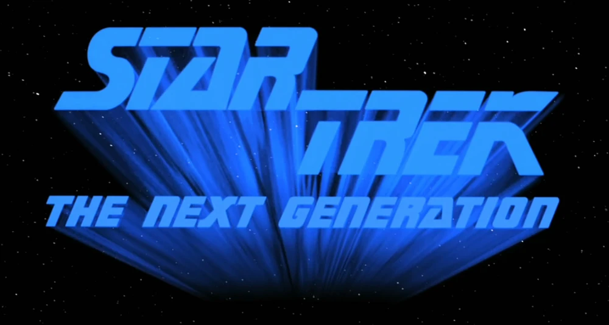

Star Trek: The Next Generation, often abbreviated to TNG, is the second live-action Star Trek television series, and the first set in the 24th century. Like its predecessors, it was created by Gene Roddenberry. Produced at Paramount Pictures, it aired in first-run syndication, by Paramount Television in the US, from September 1987 to May 1994. The series was set in the 24th century and featured the voyages of the starship USS Enterprise-D under Captain Jean-Luc Picard.
The series led to four spin-offs set in the same time period: Star Trek: Deep Space Nine, which it ran alongside during its final two seasons, Star Trek: Voyager, Star Trek: Lower Decks and Star Trek: Picard. It is also the beginning of a contiguous period of time during which there was always at least one Star Trek series in production, ending with Star Trek: Enterprise in 2005.
Star Trek: The Next Generation moved the universe forward roughly a century past the days of James T. Kirk and Spock. The series depicted a new age in which the Klingons were allies of the Federation, though the Romulans remained adversaries. New threats included the Ferengi (although they were later used more for comic relief), the Cardassians, and the Borg. While Star Trek: The Original Series was clearly made in the 1960s, the first two seasons of The Next Generation show all the markings of a 1980s product, complete with Spandex uniforms.
As with the original Star Trek, TNG was still very much about exploration, "boldly going where no one has gone before". Similarly, the plots captured the adventures of the crew of a starship, namely the USS Enterprise-D. Despite the apparent similarities with the original series, the creators of TNG were adamant about creating a bold, independent vision of the future. The public did not widely accept the show on its own terms until the airing of "The Best of Both Worlds", which marked a shift towards higher drama, serious plot lines, and a less episodic nature. This helped pave the way for Star Trek: Deep Space Nine and its two-year-long Dominion War arc and preceding build-up, as well as the third and fourth seasons of Star Trek: Enterprise. Star Trek: Voyager capitalized on the heightened crew relationships and familial bonds first seen on The Next Generation. DS9, on the other hand, balanced political intrigue, character development, and series-long plot threads with a rerun-friendly format.
As with the original Star Trek, TNG's special effects utilized miniatures, but due to great advancements in computerized effects and opticals, the show leaped ahead of its predecessor in terms of quality effects. This series marked the greatest surge in Star Trek's mainstream popularity, and paved the way for the later televised Trek shows.